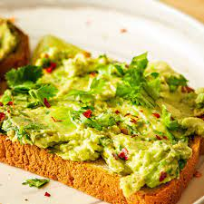

Avocado Toast

Ingredients:
- 2 slices whole-grain bread
- 1 ripe avocado
- 1 tablespoon lemon juice
- Salt and pepper to taste
- Red pepper flakes (optional)
- Cherry tomatoes, sliced, for garnish
- Feta cheese, crumbled, for garnish
- Fresh cilantro or parsley, chopped, for garnish
Instructions:
- Toast the slices of whole-grain bread to your liking.
- While the bread is toasting, cut the avocado in half, remove the pit, and scoop the flesh into a bowl.
- Add lemon juice, salt, and pepper to the avocado. Mash and mix with a fork until you achieve your desired guacamole consistency.
- Once the bread is toasted, spread the mashed avocado evenly over each slice.
- Sprinkle red pepper flakes for a bit of heat if desired.
- Garnish with sliced cherry tomatoes, crumbled feta cheese, and chopped cilantro or parsley.
- Serve immediately and enjoy your delicious and nutritious Avocado Toast!